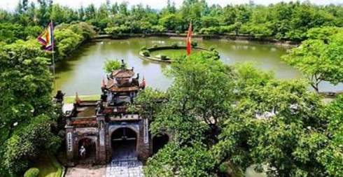
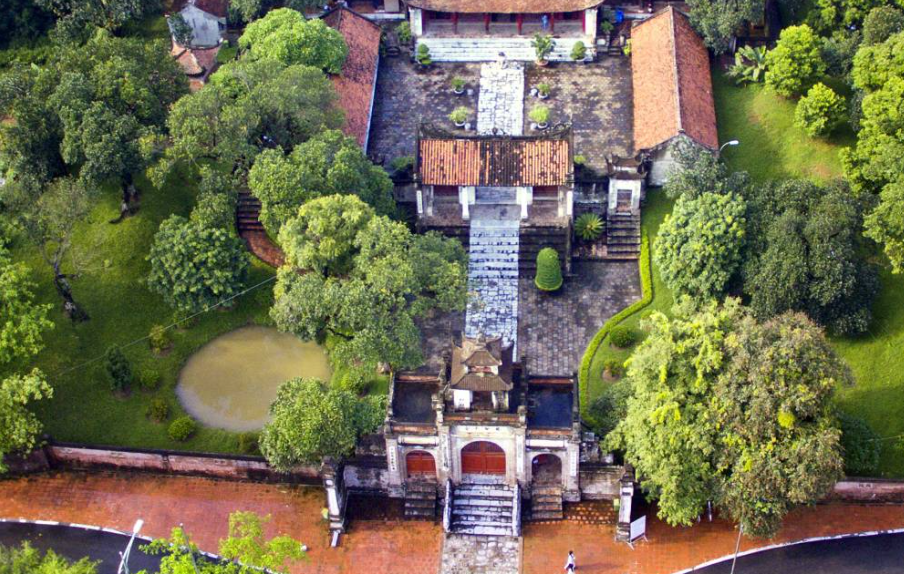
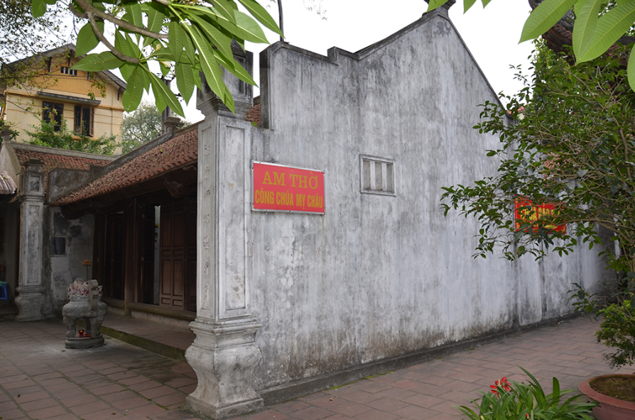

Khu di tích lịch sử Cổ Loa nằm tại huyện Đông Anh, Hà Nội. Đây là kinh đô của nước Âu Lạc dưới thời An Dương Vương, nổi tiếng với truyền thuyết Mỵ Châu - Trọng Thủy và chiếc nỏ thần. Thành Cổ Loa có cấu trúc hình xoáy ốc độc đáo, được coi là một trong những công trình quân sự cổ nhất của Việt Nam.
Lễ hội Cổ Loa được tổ chức hằng năm vào ngày mồng 6 tháng Giêng âm lịch, thu hút đông đảo du khách và người dân đến tham dự để tưởng nhớ công lao dựng nước của An Dương Vương.
Thông tin chi tiết, truy cập Du lịch Hà Nội.
Created by TN.Thành